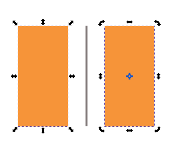
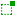
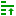

选择工具
快捷键：S 或者 F1
选择工具(  )可以用来选中一个或多个对象，以对其进行各种操作，例如移动、缩放、变形、旋转等。
)可以用来选中一个或多个对象，以对其进行各种操作，例如移动、缩放、变形、旋转等。
操作方法
选中单个对象
用鼠标左键点击选择工具(
)，此时选择工具被激活，然后鼠标左键点击需要选择的对象即可选中该对象。
选中多个对象
用鼠标左键点击选择工具(
选中多个对象(shift)
用鼠标左键点击选择工具(
提示
按下shift键不松手再鼠标左键点击某个已选中对象，会把该对象从选中状态变为不选中状态。
移动对象
选中某个或多个对象后，鼠标左键点击其中一个对象不松手，然后移动鼠标，到达需要的位置后松开鼠标即可。
缩放/旋转/变形对象
选中某个或多个对象后，对象周围会显示8个控制手柄；在对象上再点击一次鼠标左键，控制手柄形态会发生变化，并且在对象的中心会多出一个中心控制手柄。两种情况如下图所示：
8个控制手柄：第一形态 (左 )；第二形态 (右 )
左图中，鼠标点击任意一个手柄并拖动，就可以缩放对象。
右图中，鼠标点击矩形四个角上的任意一个手柄并拖动，就可以旋转对象。
右图中，鼠标点击矩形四条边上的任意一个手柄并拖动，就可以变形对象。
右图中，矩形中心的空心十字是旋转和变形的中心点，可以用鼠标移动位置：鼠标左键点击十字并拖动，到达合适的位置后松开鼠标即可。
以上操作的同时如果按下shift键或ctrl键或alt键时会有更多功能。
工具选项
(  )：选择框功能切换。此图标未激活时，用鼠标框选对象时，需要把对象的所有部分全部包括在选择框内才可以选中；如果某对象有任何一点在框外，则无法选中该对象。此图标激活以后，不需要把对象的所有部分都包括在框内，即只要框线碰到了对象即可选中该对象。
(
 )：水平翻转，等同于快捷键H 。
)：水平翻转，等同于快捷键H 。(  )：堆叠次序向上提升一级，等同于快捷键PageUp 。
( X: )：选中对象的左上角的横坐标值(以矩形计算)。
( Y: )：选中对象的左上角的纵坐标值(以矩形计算)。
{kind=link}
{kind=link}
{kind=link}
{kind=link}
{kind=link}
{kind=link}
{kind=link}
{kind=link}
{kind=link}
{kind=link}
{kind=link}
{kind=link}
{kind=link}
{kind=link}
{kind=link}
{kind=link}